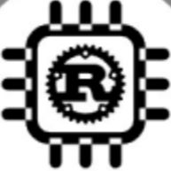

Rust嵌入式探讨
文章库
文章知识
主题词条
项目
资源
成员
技术互助
周报
站文档
加入我们
本页目录

Rust嵌入式探讨
一个 QQ 群的技术共建博客：嵌入式、Rust，以及把想法做出来的过程
搜索
文章库
按年份浏览全部文章
36 项
文章知识
系列 / 标签 / 作者索引
主题词条
主题词条与关系图
2 项
项目
仓库元数据与活跃度比较
10 项
资源
书 / 教程 / 工具 / 视频
3 项
成员
成员档案与作品
5 项
技术互助
技术互助
1 项
周报
周报 / 月刊
1 项
站文档
制度与写作文档
14 项
加入我们
加入 QQ 群
最近更新
2026-10-20
1.19 其他
13995 字
2026-10-20
1.18 Rust 标准库
1499 字
2026-10-20
1.17 文件操作
8128 字
章节结构
×